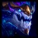
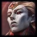
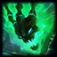

Aurelion Sol
buffMatters more later in the game, once Aurelion Sol has ranks and items.
- ETotal magic damage
50 / 75 / 100 / 125 / 150 (+60% AP) over 5s → 50 / 80 / 110 / 140 / 170 (+60 / 65 / 70 / 75 / 80% AP) over 5s
Summoner's Rift only: champions, items and anything else that touches ranked games. Exact numbers, what they mean, and where each champion stands in this tier list right now.
Tier and score now (Emerald+, all regions), then the change since 26.21. A grey change is small enough to be chance. Tap a role to open the champion.

Matters more later in the game, once Aurelion Sol has ranks and items.
50 / 75 / 100 / 125 / 150 (+60% AP) over 5s → 50 / 80 / 110 / 140 / 170 (+60 / 65 / 70 / 75 / 80% AP) over 5s
90 / 170 / 250 (+85% bonus AD) → 100 / 190 / 280 (+90% bonus AD)
180 / 340 / 500 (+170% bonus AD) → 200 / 380 / 560 (+180% bonus AD)
Mostly helps early: max rank stays the same.
12 / 11 / 10 / 9 / 8s → 10 / 9.5 / 9 / 8.5 / 8s
160 / 120 / 80s → 140 / 110 / 80s
Only the % max health part changes, so it helps most against tanky targets.
75 / 120 / 165 / 210 / 255 (+2 / 2.5 / 3 / 3.5 / 4% of target max health) (+50% AP) → 75 / 120 / 165 / 210 / 255 (+2.5 / 3 / 3.5 / 4 / 4.5% of target max health) (+50% AP)
45 / 60 / 75 / 90 / 105 (+40% bonus AD) → 55 / 70 / 85 / 100 / 115 (+45% bonus AD)
20% → 22%
Only the scaling changes, so it helps more the more items Rumble has.
120 / 200 / 280 (+35% AP) → 120 / 200 / 280 (+40% AP)
175% AP → 200% AP
Mostly helps early: max rank stays the same.
100 / 125 / 150 / 175 / 200% → 120 / 140 / 160 / 180 / 200%
Mostly helps early: 10 → 25 at rank 1 is a much bigger change than 110 → 125 at max rank.
10 / 35 / 60 / 85 / 110 (+50% bonus AD) (+80% AP) → 25 / 50 / 75 / 100 / 125 (+50% bonus AD) (+80% AP)
Matters more later in the game, once Viktor has ranks and items. Health: +85 at level 18.
100/level → 105/level
100 / 175 / 250 (+50% AP) → 100 / 175 / 250 (+60% AP)

Mostly helps early: max rank stays the same.
10 / 9 / 8 / 7 / 6s → 8 / 7.5 / 7 / 6.5 / 6s
18 / 26 / 34 / 42 / 50 → 15 / 22 / 29 / 36 / 43
75.6 / 109.2 / 142.8 / 176.4 / 210 → 63 / 92.4 / 121.8 / 151.2 / 180.6
6s → 5s

56 → 54
250 / 400 / 550 (+100% AP) → 200 / 350 / 500 (+100% AP)
Only the scaling changes, so it hurts more the more items Yasuo has.
20 / 45 / 70 / 95 / 120 (+105% AD) → 20 / 45 / 70 / 95 / 120 (+100% AD)
Bigger update: W works differently now (a nova that destroys projectiles, shields her and speeds her up). Less health at level 1 but more from level 8, more mana from level 4, shorter R cooldown at ranks 2 and 3.
640 + 99/level → 590 + 107/level
480 + 28/level → 455 + 38/level
5.2/level → 5.4/level
54 + 3.3/level → 52 + 3.3/level
2.5%/level → 2.75%/level
8 - 30 (+4% AP) → 4 - 30 (+4% AP)
50% less → 45% less
60 / 85 / 110 / 135 / 160 (+55% AP) → 60 (+25% AP)
5 / 7 / 9 / 11 / 13 (+5% AP) → 5 / 10 / 15 / 20 / 25 (+8% AP)
85 - 277 (+80 - 100% AP) → 85 - 285 (+65 - 97% AP)
0.5 to 1s cooldown refund (by level) when it hits a champion
70 / 75 / 80 / 85 / 90 → 60 / 65 / 70 / 75 / 80
3800 → 3200
Expanding nova (400 radius over 0.75s) that destroys enemy projectiles and shields and hits back for each projectile it destroys
35 / 40 / 45 / 50 / 55 (+10% AP), then 5 / 10 / 15 / 20 / 25 (+5% AP) per later hit, up to 7 per enemy
80 / 110 / 140 / 170 / 200 (+70% AP) for 2s
10 to 30% (by level) for 2s
100 / 80 / 60 / 40 / 0
30 / 28.5 / 27 / 25.5 / 24s
1.5s → 0.8 to 1.6s at rank 1 up to 1.0 to 2.2s at rank 5, longer the farther it travels
30% → 20 / 25 / 30 / 35 / 40%
50 / 60 / 70 / 80 / 90 → 40 / 50 / 60 / 70 / 80
120 / 100 / 80s → 120 / 90 / 60s
Builds from OP.GG, Global Emerald+.
Starting item for Kai'Sa (ADC), Ezreal (ADC), Yone (Top, Mid), Yasuo (Top, Mid, ADC), Yunara (ADC), Caitlyn (ADC) and 16 more.
8 → 7
Core item for Sett (Top), Sion (Top) and Kled (Top).
More attack damage from the moment you buy it, a bit less extra damage when you are low on health.
30 → 40
up to 12% of total AD → up to 10% of total AD
TFT moved to its own client on 4 Nov. A button switches between League and TFT, and TFT cosmetics you already own still work in League. That is why this download was bigger than usual. An option to skip TFT downloads comes in a later patch.
No rune, summoner spell, map or ranked changes.
K/DA Firestarter Ahri, K/DA Firestarter Evelynn, K/DA Firestarter Kai'Sa, K/DA Firestarter Ignition Akali, K/DA Hitmaker Evelynn, Prestige Classic Baron Kog'Maw.
Chromas: Music Fan Gragas (Firestarter), Prestige Classic Baron Kog'Maw (Vivid).
Source: Riot's patch 26.22 notes. Written short in our own words, the numbers are copied as listed. ARAM, Arena, Classic and other modes are left out on purpose.